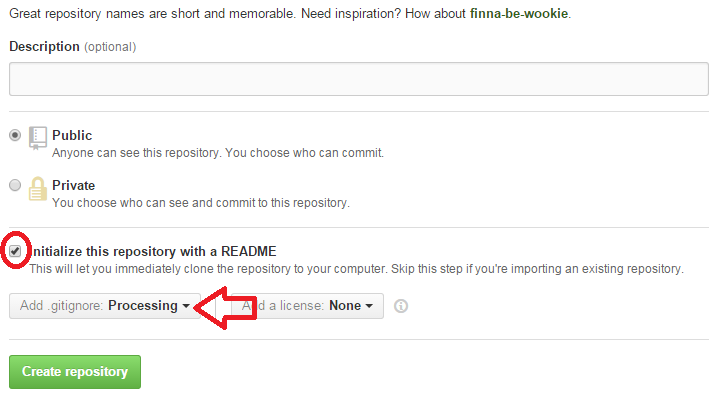
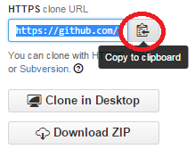
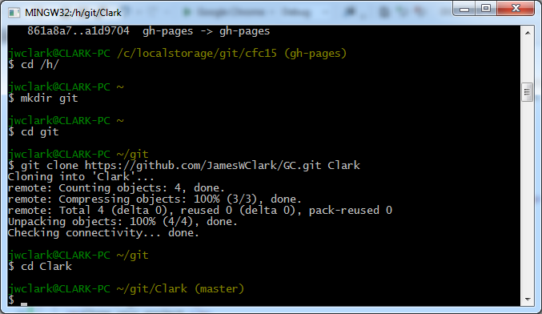
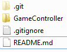

Git is a free and open source distributed version control system designed to handle everything from small to very large projects with speed and efficiency.
source: https://git-scm.com/
GitHub is the largest code host on the planet with over 23.5 million repositories. Large or small, every repository comes with the same powerful tools. These tools are open to the community for public projects and secure for private projects.
source: https://github.com/features
Create a Github account.
Login. Create a new repository. Call it Camp.
Initialize your repository with a README, and select Processing from the list.
Copy your repository's URL.
Open Git Bash from the Start Menu.
Create a new directory on the H: drive. Call it git.
cd /h/
mkdir git
cd git
Clone your project.
git clone <your url goes here> <your name goes here>
example: git clone https://github.com/Clark/Camp.git MyCampProject
Go into your project in Git Bash.
cd <your name from above goes here>
Your shell should look like this.
Next, we start adding project files. For example, you can continue working on the GameController class. Open Processing. Go to File > Save As. Name your project GameController and save it in the same location as your Git repository (on the H: drive). Your directory should now look like this.
Switch to Git Bash. Stage your files, preparing them for commit to Github.
git add *
Commit the changes you've made. Add custom messages after the -m such as "initial commit".
git commit -m "initial commit"
Finally, push the changes to Github.
git push origin master
Enter your username and password for Github. Verify the change is live on Github.com.
Now, when we work on another computer or at a different location (such as home), we can continue these steps to make changes to our code projects.